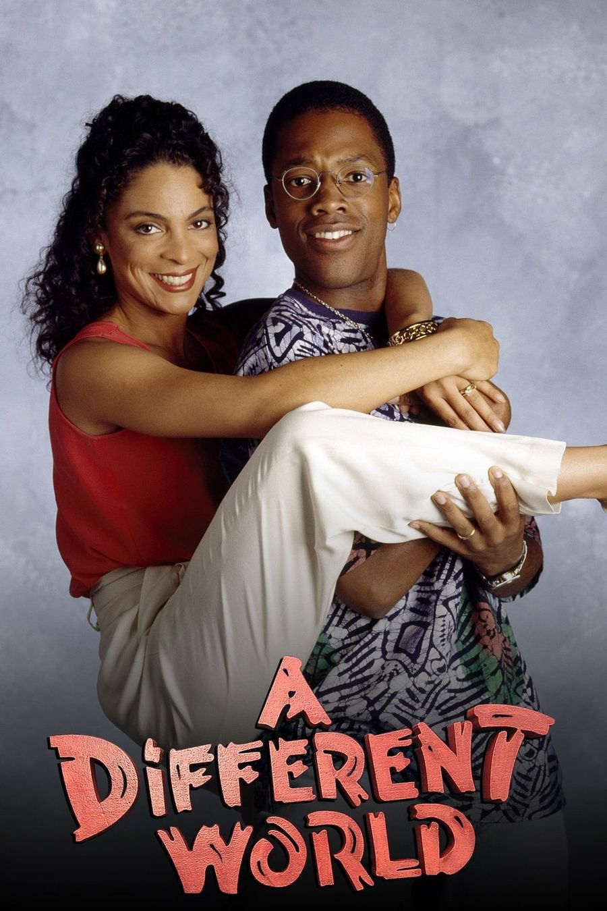
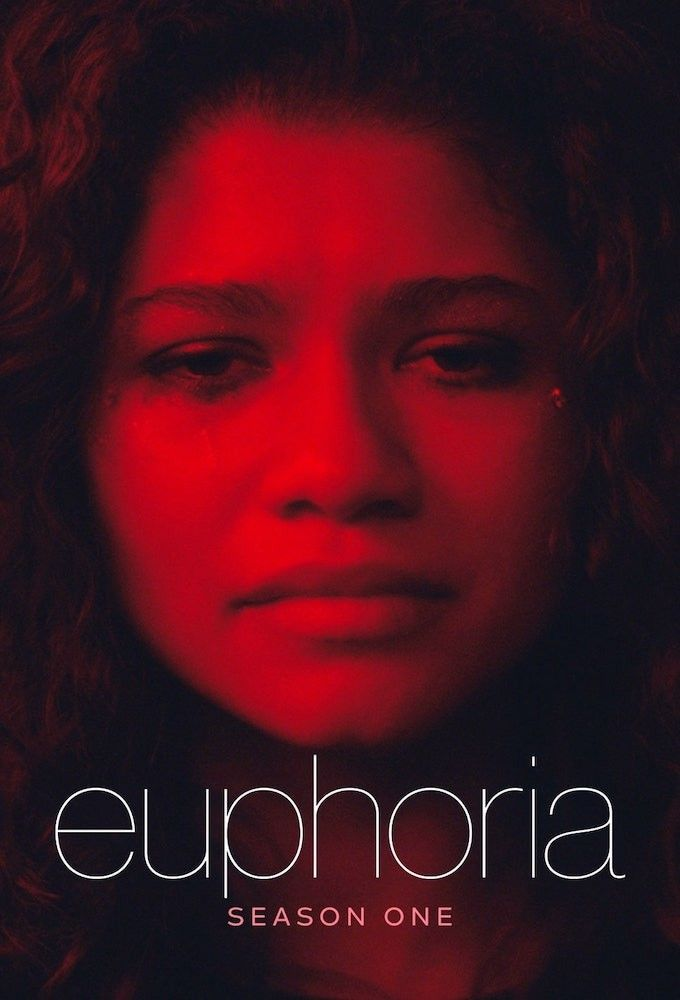

Laboratory Practical Work
Hands-on Lab Exercises
Hello, I'm
Applied Biology Student
A motivated and enthusiastic student at Jomo Kenyatta University of Agriculture and Technology (JKUAT), Nairobi, with a strong academic background and a real interest in practical, hands-on learning — in the laboratory and beyond.

My Skills
I use everyday digital tools and careful practical skills to study, document laboratory work and present findings clearly.
Documents & Assignments
Data & Spreadsheets
Presentations
Records & Findings
About Me
I'm a first-year BSc Applied Biology student at Jomo Kenyatta University of Agriculture and Technology in Nairobi, Kenya. I bring good communication, teamwork and organisational skills to everything I do, and I gain the most from practical learning — following instructions carefully, maintaining accuracy during tasks, and documenting findings in clear academic reports.
My Portfolio
A collection of my academic and laboratory work, showing accuracy, documentation and practical problem-solving.
Hands-on Lab Exercises
Applied Learning Tasks
Careful, Reliable Work
Documented Results
Let's Talk
I'm always open to learning opportunities, practical attachments and academic collaborations. Let's start a conversation!
Academic Journey
From Moi Suba Girls High School to a BSc in Applied Biology at JKUAT — the education, skills and practical experience behind this portfolio.
Jomo Kenyatta University of Agriculture and Technology (JKUAT), Kenya. Building a foundation in biological sciences through lectures, laboratory practicals and academic projects.
Moi Suba Girls High School. Completed secondary education with a strong academic background.
ICS 2216 · Lab 1
Professional document formatting, structuring a CV, and presenting skills and education clearly.
ICS 2216 · Lab 2
HTML structure, CSS styling, hyperlinks and navigation, images with alt text, and responsive, accessible design — this site.
Applied Biology
Following procedures accurately, observing carefully, and documenting findings in academic reports.
Applied biology in everyday life — how living systems work, careful observation in the laboratory, and using computing tools to record, organise and present scientific information.
A motivated and enthusiastic student with a strong academic background and an interest in practical learning. I bring good communication, teamwork and organisational skills, and I am keen to gain valuable professional experience alongside my studies.
Hobbies
The interests that keep me curious outside the classroom — most of them connect right back to biology, nature and learning how living things work.
Walking outdoors and observing plants, insects and birds in their natural environment — the hobby that made Applied Biology feel like the right course for me.
Field curiosity · 9/10Music keeps me focused during study sessions and relaxed after long laboratory days. It is the soundtrack to most of my revision.
Study companion · 9/10Taking photos of people, places and nature — including the two portraits on this website. I enjoy capturing colour and light on an ordinary day.
Favourite shots · Portraits & natureReading beyond the coursework — books and articles about the human body, plants and the environment that deepen what we cover in class.
Currently reading · Biology topicsWorking with classmates on group assignments and practicals. Teamwork is one of my core skills, and group study makes difficult topics easier.
Teamwork · 10/10Looking after plants at home and watching them grow — a small, everyday way of practising the observation skills I use in biology practicals.
Patience level · High
Nature walks. Every walk is a mini field trip — I try to identify at least one new plant or insect each time, then look it up when I get home. Weird talent: remembering the steps of a lab procedure after reading them just once.
Movies & Shows
Just two favourites. One classic campus comedy-drama and one modern drama — both about young people finding their way, making mistakes and growing up.

Life at Hillman College, a fictional historically Black university — friendships, ambition, love and growing up away from home. As a university student myself, the campus stories, the humour and Whitley and Dwayne's journey feel close to real student life.

Zendaya stars as Rue in HBO's raw, emotional drama about youth, identity, addiction and friendship. The storytelling is honest and hard-hitting, and the visuals are striking — a show that stays with you long after each episode ends.
Contact
I'd love to hear from you about study opportunities, practical attachments, academic projects — or just a good movie recommendation.
Resume
ICS 2216 Lab 1 CV, presented as a web page. Contact is by email only.
Nairobi, Kenya | anita.tracy856@gmail.com
A motivated and enthusiastic student with a strong academic background and an interest in practical learning. Possesses good communication, teamwork, and organizational skills, and gains valuable professional experience.
Jomo Kenyatta University of Agriculture and Technology, Kenya
Moi Suba Girls High School
Practical & Personal Skills
Computer Skills
ICS 2216 Applied Computing — Jomo Kenyatta University of Agriculture and Technology (JKUAT). This portfolio website is the Lab 2 capstone project, built from this CV.